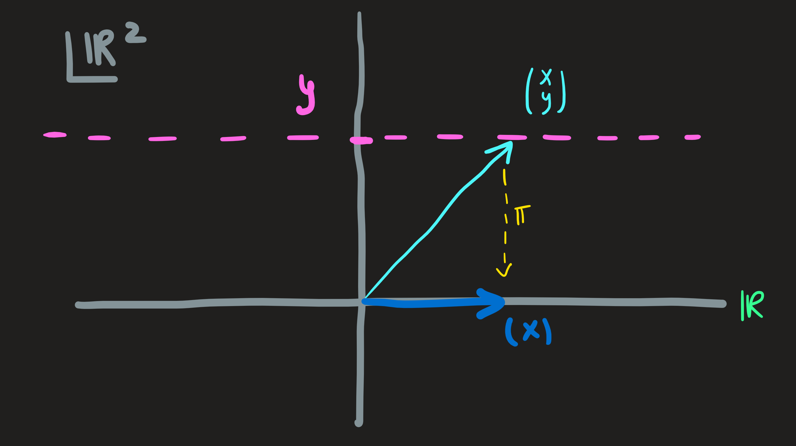
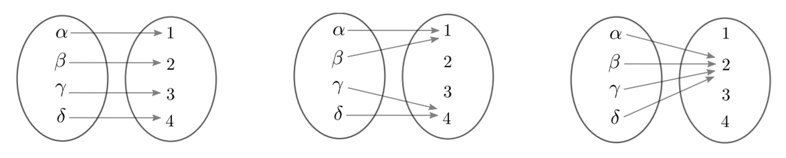

Linear functions
Up to now, we learned a more pratical part of the course:
How to compute the solution of \(A\mathbf{x}=\mathbf{b}\)?
How to compute a basis for the \(4\) subspaces associated with \(A\)?
How to compute the inverse \(A^{-1}\)?
How to compute the determinant?
It always how to compute. Now we enter a more conceptual part of the course and organize ideas.
Structure of a vector space
For example take \(\mathbb{R}^2\), we know that:
\[ (1,3)+(0,1) = (1,4) \]
Therefore, the vectors \((1,3)\) and \((0,1)\) are connected to \((1,4)\).
When I multiply a vector by number:
\[ 3(1,9) = (3,27) \]
and as a result the vector \((1,9)\) is connected with \((3,27)\).
A generic l.c. \(\alpha(1,3)+\beta(0,1) = (\alpha,3\alpha+\beta)\). Connects \(\alpha(1,3)\) and \(\beta(0,1)\) with \((\alpha,3\alpha+\beta)\).
The operation l.c. creates this web of connectivity between elements of a vector space.
Linear functions
Consider two vector spaces \(\mathbb{R}^n\) and \(\mathbb{R}^m\). As such they are closed under l.c. and present a structure of connectivity among its elements.
A linear function is a bridge between elements of both vectors spaces, but it is not just any bridge, it a bridge that is constructed following one rule.
Definition 1 Let \(\mathbb{R}^n\) and \(\mathbb{R}^m\) be two vector spaces (thus with their own structure induced by the operation of l.c.)
A linear function is defined as:
\[ \begin{align} f:\mathbb{R}^n&\longrightarrow \mathbb{R}^m\\ \bf{u}&\longmapsto f(\bf{u}) \end{align} \]
such that the following rule is obeyed: \(f(\lambda \bf{u}+\mu \bf{v}) = \lambda f (\bf{u}) + \mu f(\bf{v})\)
for all \(\lambda,\mu \in \mathbb{R}\) and \(\bf{u},\bf{v}\in \mathbb{R}^n\).
Terminology: The vector space \(\mathbb{R}^n\) is the domain of the function \(f\), while \(\mathbb{R}^m\) is the codomain (of \(f\))
when referring to a linear function well use \(\sim\) and write: \(f:\mathbb{R}^n\overset{\sim}{\longrightarrow} \mathbb{R}^m\).
Lets see some example, as well as answer the question: Is it linear or not?
Is it linear or not?
Example 1:
Consider the function:
\[ \begin{align}f:\mathbb{R}&\longrightarrow \mathbb{R}\\ x&\longmapsto f(x):=ax\end{align} \]
where \(a\) is some real constant. This is a typical high-school function also known as proportionality function aka polynomial of degree one.
The domain and codomain are both \(\mathbb{R}\).
To check its linear we choose two generic elements of the domain \(x_1\) and \(x_2\) and l.c. them using a generic coefficients \(c_1\) and \(c_2\) :
\[ f(c_1 x_1+ c_2 x_2) = a ( c_1 x_1+ c_2 x_2) = ac_1 x_1+ ac_2 x_2 = c_1f(x_1)+c_2f(x_2) \]
Indeed it is.
Example 2:
Now a function from \(\mathbb{R}\) into \(\mathbb{R}^2\)
\[ \begin{align}g:\mathbb{R}&\longrightarrow \mathbb{R}^2\\ x&\longmapsto g(x):=(2x,x)\end{align} \]
Is this function linear?
\[ g(c_1 x_1+ c_2 x_2)=(2(c_1 x_1+ c_2 x_2),c_1 x_1+ c_2 x_2) = c_1(2x_1+,x_1)+c_2(2x_2,x_2)=c_1g(x_1)+c_2g(x_2) \]
Because our choices where arbitrary, yes, this \(g\) is linear.
Example 3:
The projection function, picks out the \(x\) component of the vector \((x,y)\):
\[ \begin{align}\pi:\mathbb{R}^2&\longrightarrow \mathbb{R}\\ (x,y)&\longmapsto \pi(x,y):=x\end{align} \]
Is it linear?
\[ \pi(c_1(x_1,y_1)+c_2(x_2,y_2)) = \pi (c_1x_1+c_2x_2,c_1y_1+c_2y_2)=c_1x_1+c_2x_2 =c_1 \pi(x_1,y_1) + c_2\pi(x_2,y_2) \]
A l.c. of inputs - \((x_1,y_1)\) and \((x_2,y_2)\) - yields the same l.c. of outputs - \(\pi(x_1,y_1)\) and \(\pi(x_2,y_2)\).
Example 4:
From \(\mathbb{R}^2\) to \(\mathbb{R}^2\):
\[ \begin{align}\Phi:\mathbb{R}^2&\longrightarrow \mathbb{R}^2\\ (x,y)&\longmapsto \Phi(x,y):=(2x-y,x+y)\end{align} \]
Is it?
\[ \begin{align} \Phi(c_1(x_1,y_1)+c_2(x_2,y_2)) &= \Phi(c_1x_1+c_2x_2,c_1y_1+c_2y_2)\\ &=(2(c_1x_1+c_2x_2)-(c_1y_1+c_2y_2),c_1x_1+c_2x_2+c_1y_1+c_2y_2)\\ &=c_1(2x_1-y_1,x_1+y_1)+c_2(2x_2-y_2,x_2+y_2)\\ &=c_1\Phi(x_1,y_1)+c_2\Phi(x_2,y_2) \end{align} \]
Yes.
Example 5:
From \(\mathbb{R}^2\) to \(\mathbb{R}^2\) once more:
\[ \begin{align}\Xi:\mathbb{R}^2&\longrightarrow \mathbb{R}^2\\ (x,y)&\longmapsto \Xi(x,y):=(2x-2y,x-y)\end{align} \]
?
\[ \begin{align} \Xi(c_1(x_1,y_1)+c_2(x_2,y_2)) &= \Xi(c_1x_1+c_2x_2,c_1y_1+c_2y_2)\\ &=(2(c_1x_1+c_2x_2)-2(c_1y_1+c_2y_2),c_1x_1+c_2x_2-c_1y_1-c_2y_2)\\ &=c_1(2x_1-2y_1,x_1-y_1)+c_2(2x_2-2y_2,x_2-y_2)\\ &=c_1\Xi(x_1,y_1)+c_2\Xi(x_2,y_2) \end{align} \]
It is.
Example 6: (NON-linear)
Again, from \(\mathbb{R}^2\) to \(\mathbb{R}^2\), but this time we have a square involved, hence the name square function:
\[ \begin{align}\square:\mathbb{R}^2&\longrightarrow \mathbb{R}^2\\ (x,y)&\longmapsto \square(x,y):=(2x^2,y)\end{align} \]
Checking as usual:
\[ \begin{align} \square(c_1(x_1,y_1)+c_2(x_2,y_2))&=\square(c_1x_1+c_2x_2,c_1y_1+c_2y_2)\\ &=(2(c_1x_1+c_2x_2)^2,c_1y_1+c_2y_2)\\ &=(2((c_1x_1)^2+2c_1c_2x_1x_2+(c_2x_2)^2),c_1y_1+c_2y_2)\\ &\not=c_1\square(x_1,y_1)+c_2\square(x_2,y_2) \end{align} \]
The range is \(\square(\mathbb{R}^2)=[0,\infty)\times\mathbb{R}\).
It is usual to give a more break down \(f(\nu \bf{u}+\lambda \bf{v}) = \nu f (\bf{u}) + \lambda f(\bf{v})\) into two rules:
\(f(\bf{u}+\bf{v})=f(\bf{u})+f(\bf{v})\)
\(f(\lambda \bf{u})=\lambda f(\bf{u})\)
Rather than checking one more complex rule we can check two simpler rules.
Notice the summation and multiplication are defined in distinct vector spaces.
Example 7: Matrices are procedures that define linear functions
Idea: Consider two vector spaces \(\mathbb{R}^4\) and \(\mathbb{R}^3\). The vectors that live in \(\mathbb{R}^4\) have the form \(\mathbf{x}=(x,y,z,w)\) while those in \(\mathbb{R}^2\) are \(\mathbf{u}=(u,v,t)\).
A function \(f\) that maps vectors from \(\mathbb{R}^4\) and \(\mathbb{R}^3\) can be constructed from the procedure \(A\mathbf{x}\).
We define this function as:
\[ \begin{align} f:\mathbb{R}^4&\longrightarrow \mathbb{R}^3\\ \mathbf{x}&\longmapsto f(\mathbf{x}):=A\mathbf{x} \end{align} \]
where \(A\) is for example (an already familiar matrix):
\[ A=\begin{pmatrix}1 & 2 & 2 & 2 \\2 & 4 & 6 & 8 \\3 & 6 & 8 & 10 \end{pmatrix} \]
Its shape tell us all, \(4\) columns ready to multiply the \(4\) coefficients in \((x,y,z,w)\) returning a \(3\) entry vector \(A\mathbf{x}\).
Notice how the property \(A(\alpha \mathbb{x} +\beta \mathbf{y})=\alpha A\mathbf{x} +\beta A \mathbf{y}\) leads to \(f\) being linear as well\(f(\alpha \mathbb{x} +\beta \mathbf{y})=\alpha f(\mathbf{x}) +\beta f (\mathbf{y})\).
Essentially, what we want with the introduction of this \(f\) is to name an idea already present in \(A\mathbf{x}=\mathbf{b}\), the idea that the \(A\mathbf{x}\) part of the equation is a function that maps \(\mathbf{x}\) into the vector \(A\mathbf{x}\). With this idea in mind, the system of equations encoded \(A\mathbf{x}=\mathbf{b}\) is like asking what \(\mathbf{x}\) in the domain of \(f\) is mapped into the fixed \(\mathbf{b}\) in the codomain.
\[ A\mathbf{x}=\mathbf{b} \iff f(\mathbf{x})=\mathbf{b} \]
(Mathematical) Motivation
Why are these linear functions important?
We will answer this question in two ways: a zoom in version and a zoom out version (later)
Zoom in version: The rule says something important about the map \(f\), on the lhs we see an l.c. of elements of \(\mathbb{R}^n\), i.e., \(\nu\bf{u}\) and \(\lambda \bf{v}\) are mapped into \(\nu\bf{u}+\lambda\bf{v}\in \mathbb{R}^n\). This vector in turn is mapped, now under \(f\), into the element \(f(\nu\bf{u}+\lambda\bf{v})\in\mathbb{R}^m\). On the rhs we see a l.c. of elements of \(\mathbb{R}^m\): \(f (\bf{u})\) is being combined with \(f (\bf{v})\) with the coefficients \(\nu\) and \(\lambda\).

On the picture we see a l.c. diagram-\((\nu,\lambda)\) on the left and another on the right whose coefficients are the same. These diagrams and all the other are what we can the connectivity structure of the vector space. Notice, the elements being combined are different - on the left we have \(\bf{u}\) with \(n\) dimensions while \(\bf{u}'\) has \(m\) dimensions.
The equality \(f(\nu \bf{u}+\lambda \bf{v}) = \nu f (\bf{u}) + \lambda f(\bf{v})\) says the three points of diagram on the left are “connected” to a diagram on the right involving the same coefficients. As a result, the connection on the left is preserved because it is reproduced on the right. Its image under \(f\) does not change.
An example of a non-preserving function was the \(\square\) function whose behavior is diagrammatically akin to this:

The image of the l.c. diagram on the left does not have a corresponding l.c. diagram (with the same coefficients) on the right. Thus we say \(\square\) does not preserve the diagram during is mapping action.
Two important subspaces
The domain and codomain of a map \(f:\mathbb{R}^n\overset{\sim}{\longrightarrow}\mathbb{R}^m\) are defined by us when we introduce \(f\) to the world. But within \(\mathbb{R}^n\) and \(\mathbb{R}^m\) there are subspaces of great importance and which are determined not by us diretly, but indirectly by the operation \(f\) we choose.
These two spaces are the range of \(f\) also known as the image of the domain under \(f\) and the kernel or subspace of \(f\), also known as the zeros of the function - from high-school.
Kernel of a linear function
Definition 2 Let \(f:\mathbb{R}^n\overset{\sim}{\longrightarrow} \mathbb{R}^m\), then the kernel or nullspace of \(f\) is the subset of the domain \(\mathbb{R}^n\):
\[ \ker f = \{\bf{u}\in\mathbb{R}^n\,\,|\,\,f(\bf{u})=\bf{0}\} \]
Moreover, it is in fact a subspace.
Example 1 (cont):
The kernel of \(f(x)=ax\) is the zeros of the function:
\[ \ker f = \{x\in \mathbb{R}\,\,|\,\,ax =0\}=\{0\} \]
It is just one point in the domain, geometrically where the line intercept the x-axis.
Example 2 (cont):
Returning to \(g(x)=(2x,x)\), its nullspace is the subspace:
\[ \ker g = \{x\in \mathbb{R}\,\,|\,\,(2x,x) =(0,0)\}=\{0\} \]
Again, just one vector.
Example 3 (cont):
\[ \ker \pi = \{(x,y)\in \mathbb{R}\,\,|\,\,\pi(x,y)=x=0\}=\{(0,y)\in \mathbb{R}^2\,\,|\,\, y\in \mathbb{R}\} \]

Any vector along the subspace [0y axis] of the domain \(\mathbb{R}^2\) is always projected in the \(0\) of the codomain. This vertical axis is the kernel of \(\pi\) (determined by \(\pi\) itself)
Example 4 (cont):
The kernel of \(\Phi(x,y)=(2x-y,x+y)\) is:
\[ \ker \Phi = \{(x,y)\in \mathbb{R}^2\,\,|\,\,(2x-y,x+y)=(0,0)\} \]
We have to solve the system of equations:
\[ \begin{cases} 2x-y=0\\ x+y=0 \end{cases} \leftrightsquigarrow \begin{pmatrix} 2 & -1\\ 1 & 1 \end{pmatrix} \begin{pmatrix} x\\y \end{pmatrix} =\begin{pmatrix} 0\\0 \end{pmatrix} \leftrightsquigarrow \begin{pmatrix}2 & -1 &\bigm|0\\1 & 1 &\bigm| 0\end{pmatrix} \]
By inspection, the columns are independent and thus the solution is \((0,0)\).
Example 5 (cont):
\[ \ker \Xi = \{(x,y)\in \mathbb{R}^2\,\,|\,\,(2x-2y,x-y)=(0,0)\} \]
The corresponding system to solve is
\[ \begin{pmatrix}2 & -2 &\bigm|0\\1 & -1 &\bigm| 0\end{pmatrix} \]
whose solution is \(c(1,1)\). The kernel is the whole line along \((1,1)\).
Image of the domain (range of linear functions)
Definition 3 Let \(f:\mathbb{R}^n\overset{\sim}{\longrightarrow} \mathbb{R}^m\), then the range of \(f\) is the subset of the domain \(\mathbb{R}^m\):
\[ f(\mathbb{R}^n) = \{f(\bf{u})\in\mathbb{R}^m\,\,|\,\,\bf{u}\in\mathbb{R}^n\} \]
Moreover, it is also a subspace.
The range of \(f\) can is hard to compute, the concept is what is most important here.
How do we compute the image of the domain?
Example 1 (cont):
Is it possible to indentify any element \(y\) of the codomain \(\mathbb{R}\) by some label \(x\) of the domain \(\mathbb{R}\)? In other words, can we solve for \(x\), the equation:
\[ ax = y \]
given an arbitrary \(y\)?
Answer is yes, the form of the element of the domain assigned to \(y\) is \(y/a\).
We conclude \(f(\mathbb{R})=\mathbb{R}\).
Example 2 (cont):
Is there for every \((u,v)\in \mathbb{R}^2\) a corresponding element \(x\) in the domain \(\mathbb{R}\)? We answer by solving for \(x\):
\[ (2x,x)=(u,v) \implies \begin{cases}2x=u\\x=v\end{cases}\implies \begin{cases}x=u/2\\x=v\end{cases} \]
The answer is no. We cannot choose \(u,v\) arbitrarily and find an \(x\), the system only has solution \(x\) for specific pairs of \(u,v\), namely those that lie along the line \(y=x/2\).
Computing the image of the domain is \(f(\mathbb{R})=[\text{line with equation}\,\, y=x/2]\) we can see that it is a subset of the codomain \(\mathbb{R}^2\) and thus not everyone of its elements (those outside the line in question) are not assigned to some real \(x\). The function is therefore not surjective.
Example 3 (cont):
The codomain is \(\mathbb{R}\) is it true or false that every one of its elements has a corresponding \((x,y)\) living in the domain \(\mathbb{R}^2\).
Lets solve for \((x,y)\) the equation:
\[ \pi(x,y) = u\implies x=u \]
There is indeed a solution for this equation, in fact many of them, of the form \((u,y)\) where \(y\) is any real number.
The image of the domain under \(\pi\) is the same set as the codomain - \(f(\mathbb{R}^2)=\mathbb{R}\) - and thus the function is surjective.
Example 4 (cont):
We seek, given any \((u,y)\) of the codomain, the corresponding \((x,y)\) in the domain:
\[ \Phi(x,y)=(u,v)\implies \begin{cases}2x-y=u\\x+y=v\end{cases}\implies\begin{cases}x=(u+v)/3\\y=(2v-u)/3\end{cases} \]
Another way to check this is to compute the image of the domain: \(\Phi(\mathbb{R}^2)=\mathbb{R}^2\), because the column of the matrix are independent. The \(\Phi\) function is surjective.
Example 5 (cont):
The function \(\Xi\) maps \((x,y)\in\mathbb{R}^2\) into \((u,v)\in\mathbb{R}^2\). Is it true that every \((u,y)\) comes from some \((x,y)\)? Lets solve the adequate equation:
\[ \Xi(x,y)=(u,v) \implies \begin{cases}2x-2y=u\\x-y=v\end{cases}\implies \begin{cases}x=u/2+y\\v=2u\end{cases} \]
The equation \(l_2\) tells us that we cannot choose any pair \(u,v\) hence not every element of the codomain \(\mathbb{R}^2\) is assigned to some \((x,y)\).
Another way is to compute the image of the domain, notice as \(x,y\) ranges in \(\mathbb{R}\), then \(x-y\) ranges in \(\mathbb{R}\) as well, and thus the \(\Xi\) function is just like \(\Xi(\spadesuit) = (2\spadesuit,\spadesuit)\), see example 2.
Thus
\(\Xi(\mathbb{R}^2) = [\text{line with equation}\,\, y=x/2]\) again. And the function is not surjective.
Describing the type of mapping \(f\)
1-1, sobrejective, bijective, etc, this is more important than the range. From Kernel we can evaluate the type of connectivity
Since a function \(f\) assigns elements \(x\) to \(y\) we can view it as analogous to assigning labels \(y\) to the fruits \(x\), hence \(f\) allows us to distinguish elements in \(X\) through the labels in \(Y\). But how well were these labels assigned to the fruits? The ideal situation occurs when each \(x\) has a unique label \(y\), under this scenario we can retrieve the fruit from the label without any issue as they are unique; the worst case occurs when we have the same label for all \(x\)’s, its impossible to retrieve any fruits, under \(f\) they are all the same. These are the two extremes of a spectrum of labeling, in between we have the intermediate cases where some fruits might have some common labels, examples of these three scenarios are shown in Fig.

It is precisely to evaluate the quality of the \(f\) labeling that we introduce the words surjective, injective and bijective.
Definition 4 Let \(f:\mathbb{R}^n\overset{\sim}{\longrightarrow} \mathbb{R}^m\) be a function, then we say:
\([f\,\, \text{is onto}]:= [\forall \mathbf{y} \in \mathbb{R}^m :\exists\mathbf{x}\in\mathbb{R}^n : f(\mathbf{x})=\mathbf{y}] = [\text{Im}\,\,f =f(\mathbb{R}^n)]\)
Comment: every element in \(\mathbb{R}^m\) has a corresponding element in \(\mathbb{R}^n\).
\([f\,\, \text{is 1-1}]:=[\forall \mathbf{x},\mathbf{x}' \in \mathbb{R}^n:\mathbf{x}\not =\mathbf{x}' \implies f(\mathbf{x}_1)\not= f(\mathbf{x}')]=[\ker f =\{\mathbf{0}_{\mathbb{R}^n}\}]\)
Comment: in other words, to say \(f(\mathbf{x})=f(\mathbf{x}')\) implies \(\mathbf{x}=\mathbf{x}'\)
\([f\,\, \text{is bijective}]:=[f\,\, \text{is 1-1 and onto}]\)
Summarizing, a surjective function makes use of all available labels, but doesn’t guarantee that the labels are used one time only. Thus it might happen that apples and strawberries are given the same label. On the other hand, a 1-1 function guarantees that the labels only appear once, but does not guarantee that all available labels are used. A bijective function makes use of all labels one time.
Dimension Theorem
Theorem 1 Let \(f:\mathbb{R}^n\overset{\sim}{\longrightarrow} \mathbb{R}^m\), then:
\[ \dim \mathbb{R}^n=n = \dim \ker f + \dim \text{Im}\, f \]
Example 1 (cont): \(1 = \dim \{0\} + \dim \{y/a\,\,|\,\, y\in\mathbb{R}\}=0+1\) Note: only one vectors is needed to expand the image.
Example 2 (cont): \(1 = \dim \{0\} + \dim [\text{line with equation}\,\, y=x/2]=0+1\) Note: A line only needs one basis vector!
Example 3 (cont): \(2 = \dim\{(0,y)\in\mathbb{R}^2\,\,|\,\, y\in\mathbb{R}\}+\dim \mathbb{R} = 1+1\)
Example 4 (cont): \(2 = \dim \{(0,0)\} +\dim \mathbb{R}^2=0+2\)
Example 5 (cont): \(2 = \dim \{c(1,1)\,\,|\,\,c\in\mathbb{R}\} + \dim [\text{line with equation} \,\, y=x/2]=1+1\)